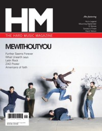

MeWithoutYou
|  September 2004 HM |
 May 2009 HM |
Media coverage:
- 2002 in Dusty "Interview: MeWithoutYou", by Joe Mendonca
- Sep 2002 in HM "The Pain of Separation", by David M Pogge
- Apr 2003 in Nor'Easter "Concert Review: @ The Skoolhouse, Harrisburg, PA", by Chris Gatto
- Sep 2004 in HM "MeWithoutYou", by David Allen
- Sum 2005 in Uprise Zine "Live Coverage: MeWithoutYou", by Jeanetta Robles
- Mar 2006 in CCM "Insider: 8 Things You Should Know About mewithoutyou", by Tony Shore
- Apr 2006 in CCM "!Hard Music", by Doug Van Pelt
- Sep 2006 in HM "Poster: MeWithoutYou"
- Sep 2006 in HM "Living Without Fear", by Doug Van Pelt
- Sep 2006 in Relevant "MeWithoutYou", by Jeff Worthen
- Nov 2008 in Relevant "Without Pretense", by Andrew Kelham
- May 2009 in HM "It's Allright In The End", by Andrew Schwab
- Mar 2013 in HM "Live Report: Underoath's Final Tour", by Rob Shameless
- Jun 2015 in HM "The Evolving Education of MeWithoutYou", by Sean Huncherick
Albums & reviews:
2003: [A→B] Life
- Jul 2002 in HM, by Jason E. Dodd
- Sep 2002 in YouthWorker, by Dave Urbanski
- 2003 in Cornerstone, by Christopher Wiitala
- Apr 2003 in Nor'Easter, by Chris Gatto
2004: Catch for Us the Foxes
- Nov 2004 in Relevant, by Jesse Carey
- Jan 2005 in YouthWorker, by Dave Urbanski
- Jan 2005 in HM, by Christopher Wiitala
- Jan 2005 in Worship Leader
2009: It's All Crazy! It's All False! It's All A Dream! It's Alright
- Jul 2009 in HM, by Adam P. Newton
- Jul 2009 in Relevant
- Aug 2009 in Christianity Today, by Joel Hartse
- Jul 2010 in Down The Line, by Josh Lory
2012: Ten Stories
- May 2012 in Relevant
- May 2012 in HM, by Nick Cotrufo
- Jul 2012 in Christianity Today, by Jeremy V. Jones
2015: Pale Horses
2018: [Untitled]
Award Summary (Nominations / Wins)
Dove Awards- 2010 Dove Awards
- Recorded Music Packaging: It's All Crazy! It's All False! It's All A Dream! It's Alright
© 2011 CMnexus. Last updated May 2025. Contact: editor -AT- cmnexus -DØT- org